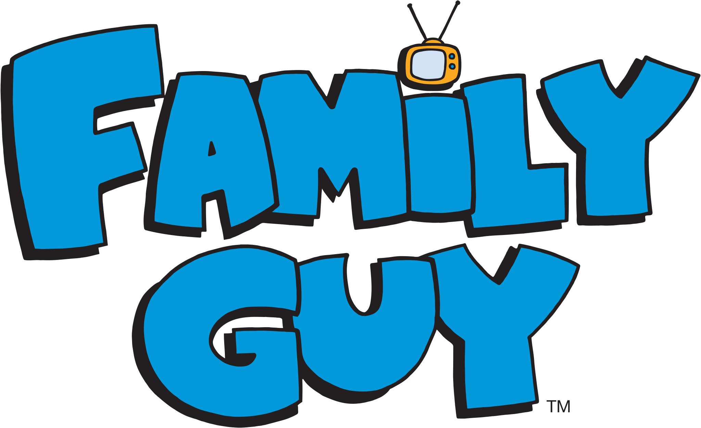

Family Guy is an American animated sitcom created by Seth MacFarlane for the Fox Broadcasting Company. The series premiered on January 31, 1999, following Super Bowl XXXIII, with the rest of the first season airing from April 11, 1999. The show centers around the Griffins, a dysfunctional family consisting of parents Peter and Lois, their children, Meg, Chris, and Stewie, and their anthropomorphic pet dog, Brian. Set in the fictional city of Quahog, Rhode Island, the show exhibits much of its humor in the form of metafictional cutaway gags that often lampoon American culture.